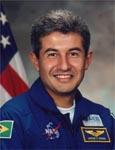

Lyndon B. Johnson Space Center
Houston, Texas 77058
|
National Aeronautics and Space Administration Lyndon B. Johnson Space Center Houston, Texas 77058 |
 |
Biographical Data |
||
Marcos C. Pontes (LIEUTENANT COLONEL, Brazil Air Force)
Astronaut, Brazilian Space Agency
PERSONAL DATA: Born March 11, 1963 in Bauru, São Paulo, Brazil. Married to the former Francisca de Fatima Cavalcanti of Angicos, Rio Grande do Norte, Brazil. They have two children. Recreational interests include weight lifting, soccer, guitar and piano, sketching, watercolor painting.
EDUCATION: Graduated from Liceu Noroeste High School, Bauru, São Paulo in 1980; received a bachelor of science in aeronautical technology from the Brazil Air Force Academy, Pirassununga, São Paulo in 1984, a bachelor of science in aeronautical engineering, from the Instituto Tecnológico de Aeronáutica, São José dos Campos, São Paulo in 1993, and a master of science degree in Systems Engineering from Naval Postgraduate School, Monterey, California in 1998.
AWARDS: Air Force Meritorious Service Medal, and Santos Dumont Medal.
SPECIAL HONORS: Graduated with Distinction Instituto Technologico de Aeronautica; received the Space and Aeronautics Institute Award and the EMBRAER (Empresa Brasileira de Aeronautica) Award in 1994 for Test Pilot Training. Air Force University Award in 1995. Graduated with Distinction Naval Postgraduate School.
EXPERIENCE: Pontes graduated as a military pilot from the Brazil Air Force Academy, Pirassununga, Sao Paulo, in 1984. After one year of advanced jet training at the 2/5 Instruction Aviation Group, Natal, Rio Grande do Norte, he was assigned to 3/10 Strike Aviation Group, Santa Maria, Rio Grande do Sul. As a military pilot, he was qualified as an instructor for Ground Attack missions and Attacks Advanced Air Controlling. As a Flight Safety Officer, his work experience included 14 years in aeronautical accident investigation. From 1989 to 1993 he attended Aeronautical Engineering course, followed by a one year Test Pilot course. As a test pilot he worked on weapons development, missile tests and aircraft evaluation. He has logged over 1,900 flight hours in more than 20 different aircraft, including F-15, F-16, F18 and MIG-29. In 1996, he was assigned to the Naval Postgraduate School. Pontes graduated from Naval Postgraduate School when he was selected for the astronaut program.
NASA EXPERIENCE: Selected as a mission specialist, he reported to the Johnson Space Center in August 1998 to attend Astronaut Training which included orientation briefings and tours, numerous scientific and technical briefings, intensive instruction in Shuttle and International Space Station systems, physiological training and ground school to prepare for T-38 flight training, as well as learning water and wilderness survival techniques. Pontes was initially assigned technical duties in the Astronaut Office Space Station Operations Branch.
Pontes is the first professional Brazilian astronaut to go into space. He launched with the Expedition-13 crew from the Baikonur Cosmodrome in Kazakhstan on March 29, 2006 aboard a Soyuz TMA spacecraft, docking with the station on March 31, 2006, where he lived and worked for the next 8-days. Pontes returned to earth with the Expedition-12 crew landing in the steppes of Kazakhstan in their Soyuz spacecraft on April 8, 2006.
Currently, Pontes continues with his technical duties for the International Space Station (ISS) Program at the Johnson Space Center, working with FIESP/SENAI-SP for the development and fabrication of the Brazilian parts for the ISS.
He is on stand-by for training for future Brazilian space flights.
NOVEMBER 2006
{kind=link}